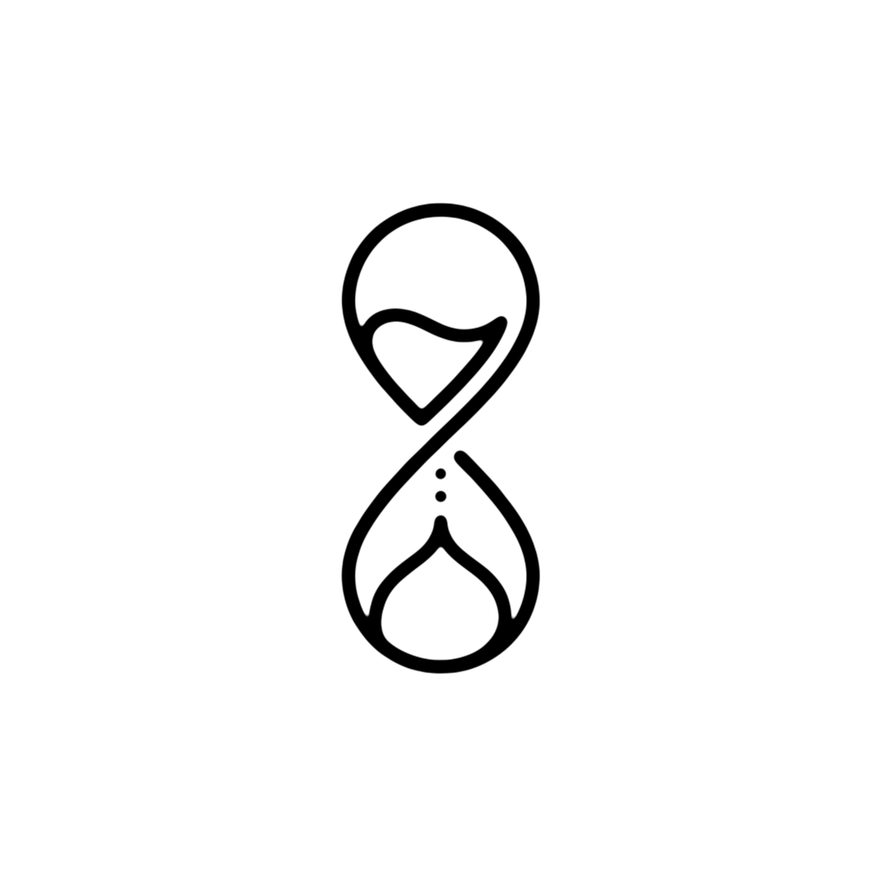

Remind
A simple and intuitive app designed to help users manage their tasks
Download
GitHub
Features
Unlimited Timers:
Create and manage multiple timers simultaneously.
Dynamic Sorting:
Timers are automatically sorted by proximity to completion—the most urgent timers always appear at the top.
Live UI:
Real-time progress bars and countdowns that update every second.
Milestone Notifications:
50% Completed: High-priority alert when half the time is gone.
90% Completed: Alert when only 10% of the time remains.
100% Completed: Final completion notification.
Pinned Notifications:
"Pin" any timer to see its live progress and remaining time in your system notification tray.
Intelligent Formatting:
12-hour time picker with AM/PM support.
Dynamic countdown labels (hides hours/minutes when they reach zero).
Persistent Storage:
Uses Android DataStore and Kotlin Serialization to ensure your timers are never lost, even after a device reboot.